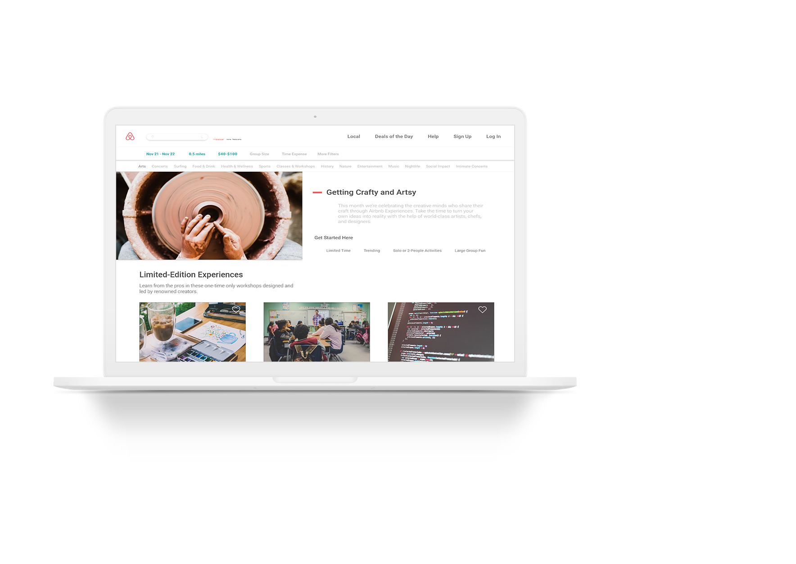

Airbnb Experience Web Redesign
Hosts are chefs, artists, and other in-the-know locals like you who give their guests access to activities and places they can’t typically find on their own. The activities are designed and led by locals to share their community and perspectives.
Learn more about the new redesign of the Airbnb Experience!
Hosts are chefs, artists, and other in-the-know locals like you who give their guests access to activities and places they can’t typically find on their own. The activities are designed and led by locals to share their community and perspectives.
Learn more about the new redesign of the Airbnb Experience!

IDEO & +Acumen Human-Centered
Design Project
A 3 month IDEO and +Acumen course that challenged my team and I to address the issue of inclusiveness of disabled people in the workforce. Learn more about the prototype that we formed!
Design Project
A 3 month IDEO and +Acumen course that challenged my team and I to address the issue of inclusiveness of disabled people in the workforce. Learn more about the prototype that we formed!